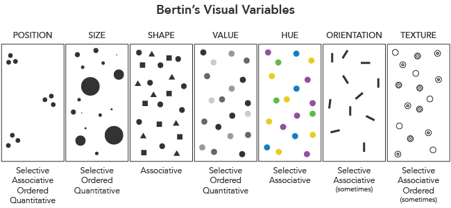

Fundamentals
Creating powerful data visualitzaion might seem to be a difficult art, learnt through years of practice. But still there is method which can help to do basic.
This course has 2 objectives:
- being able to "explain" the content of a dataset to a functional expert - usually the "customer" of the data scientist. This is the data story telling.
- being able to explore a dataset looking for powerful predicting variables to solve a prediction problem. This is the exploratory data analysis.
To do so, this course provides basic knowledge about which kind of plot is suitable for each data type.
Levels of measurement and data types
To classify data, the most used typology is Stevens' typology (1946):
| Measurement | Property | Math. operations | Advanced Operations | Data Type | Key idea |
|---|---|---|---|---|---|
| Nominal | Classification | =, ≠ (equality) |
Grouping | String | "I can make groups" |
| Ordinal | Comparison | >, < (inequality) |
Ranking | Integer | "I can order stuff" |
| Interval | Difference | +, − (addition) |
Deviation from a standard | Float | "I can measure differences" |
| Ratio | Magnitude | x, / (multiplication) |
Ratio between values | Float | "There is an absolute zero" |
Measurements types do not contain the same level of information. There is a - kind of - inclusion relationship between them:
Nominal
(group) <
Ordinal
(order) <
Interval
(relative) <
Ratio
(absolute)
E.g: You can convert an ordinal measurement to a nominal, but the opposite is often impossible without making an hypothesis.
To be noted that, even if this typology is widely used because it's simple, it is heavily criticized. Stevens was a psychologist and his typology is an oversimplification of the diversity of measurement types we can find in nature. More exhaustive - and complex - typologies have been proposed, see the note below.
More information about measurement types
Exercises
It's time to consolidate your understanding of the measurement types concept with the exercises below.
Tip: Put your mouse over the question mark to display the answer: ❓
Exercise 1: For each measurement type, find if it's a quantitative or qualitative measurement.
| Measurement | Qualitative or Quantitative |
|---|---|
| Nominal | ❓ |
| Ordinal | ❓ |
| Interval | ❓ |
| Ratio | ❓ |
Exercise 2: Find what is the measurement level for each data example
| Data | Example | Measurement |
|---|---|---|
| name | Julie, Quentin, Hakim, Marta | ❓ |
| country | France, USA, Marocco, Spain | ❓ |
| age | 27, 35, 12, 3 | ❓ |
| marathon ranking | 13th, 1st, 2nd, 2037th | ❓ |
| date | 2020-01-01, 2022-03-27, 1977-12-04 | ❓ |
| time duration | 27s, 34m 12s, 1h 07m 01s | ❓ |
| temperature °C | 41 °C, 12 °C, -21 °C | ❓ |
| temperature K | 273.15 K, 2500 K, 0.2 K, 500 nK | ❓ |
| app rating | ⭐, ⭐⭐⭐⭐⭐ | ❓ |
| USA school rating | F, A+, B+, C- | ❓ |
| french school rating | 0, 5, 20, 12 | ❓ |
| S&P countries credit rating | CCC, A+, BBB-, AAA | ❓ |
| salary | 25k€, 50k€, 150k€, 400k€, 8M€ | ❓ |
| money transfer | +40 €, -127 €, +150k€, -20000€ | ❓ |
| images | ❓ |
Visual variables
Jacques Bertin, a cartographer, introduced a basic set of visual variables (1967). A visual variable is "the differences in graphical elements as perceived by the human eye". In other words, they are visual properties which we can perceive.
In other words, a visual variable is a way to display your (non-visual) data. Data visualization is the activity of encoding data on visual variables.
The most used visual variables in cartography are position, shape, size, hue, value, texture and orientation (visually described by the figure below).
In practice, in data science, you'll use only the first 5 visual variables. There is also a - kind of - ordering relationship, in terms of expression power, between them:
Position is the most easy to use visual property and can be used to display any kind of data. Color value and hue are only slightly useful in a graph.
More information on visual variables
Visual properties
Visual variables can have four basic properties, which are related to the measurement types:
- Associative: Values can be grouped together. Suitable to represent nominal variables.
- Selective. Values from a group can be isolated from the other groups. Suitable to represent nominal variables.
- Ordered. Values show a linear order. Suitable to represent ordinal variables
- Quantitative. Values can be directly measured. Suitable to represent quantitative (interval & ratio) variables.
There is one big catch to representing quantitative variables though: you have to represent the zero value for ratio variables, because it has a meaning. This is the most common mistake in data visualization.
Bertin has analyzed the properties of the visual variables:

Those properties emerge when our visual cortex in our brain does the visual information processing. It's a perceptual phenomenon and there is a subjective dimension here.
More information on visual properties
From measurement type to visual variable
A professor recently proposed a refinement & simplification of this analysis, doing a mapping from the visual variable to the variable type directly:

In the context of data science, we can even more simplify this analysis, since we rarely use texture or orientation:
| Position | Size | Shape | Value | Hue | |
|---|---|---|---|---|---|
| Nominal | ✅ | ❔ | ✅ | ❌ | ✅ |
| Ordinal | ✅ | ✅ | ❌ | ✅ | ❔ |
| Interval | ✅ | ✅ | ❌ | ❔ | ❔ |
| Ratio | ✅ | ✅ | ❌ | ❔ | ❔ |
Measurement types & visual variables,
simplified in the context of data visualization for data science.
(Maybe the one and only table you need to remember from this course)
Exercise
Exercise: Pick one bad visualization from tumblr.com/badvisualisations and explain what is wrong with the visualization.